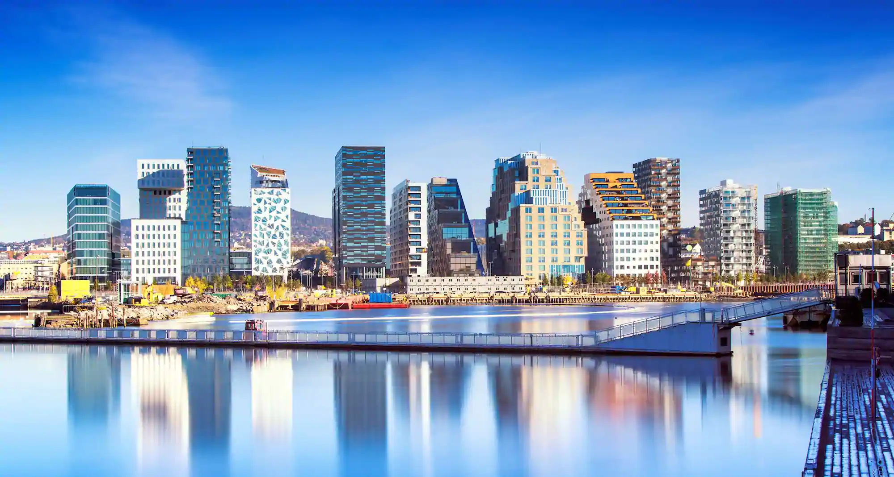
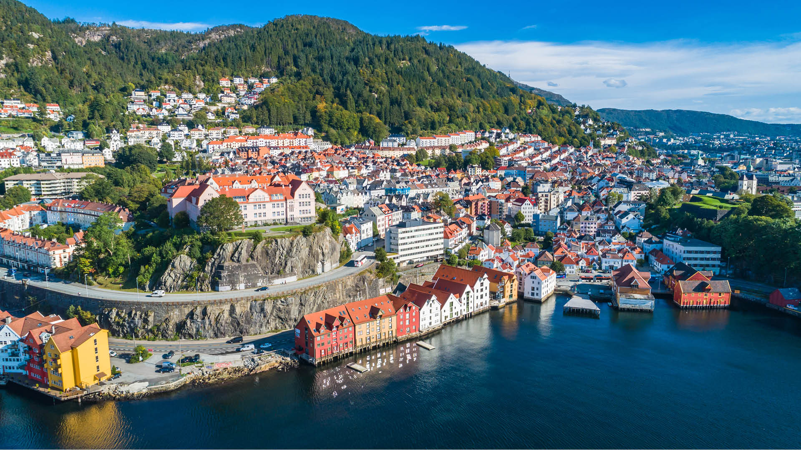
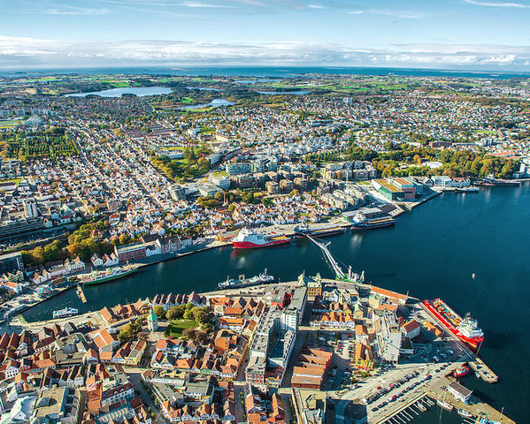
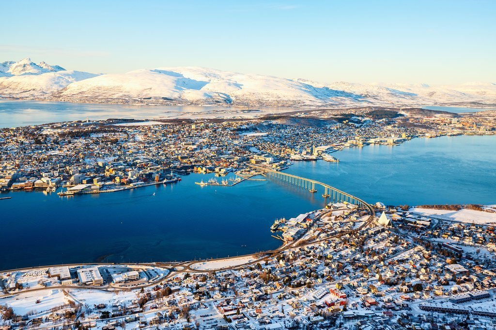

Qytetet
Qytetet e Norvegjisë janë pak më ndryshe nga shumë vende të tjera. Le të hedhim një vështrim të thelluar në gjithçka që mund të dëshironi të dini për qytetet më të mëdha Norvegjeze. Kur bëhet fjalë për Norvegjinë, qendra e vëmendjes ka tendencë të bjerë në fijet e bukura. Në rast se nuk arrijnë, atëherë janë vargmalet malore ose dritat veriore që vallëzojnë në veri. Cilindo mënyrë të shikoni, Norvegjia rurale rezulton e madhe. Sidoqoftë, shumica e popullsisë së Norvegjisë harxhon të jetojë dhe të punojë në zona urbane. Le të hedhim një vështrim se si janë qytetet më të mëdha Norvegjeze në të vërtetë...

Oslo
Kryeqyteti i Norvegjisë, Oslo është ndalesa kryesore për jetesën urbane në Norvegji. Duke qenë qendra kryesore e transportit në vend, nëse po vizitoni ose lëvizni këtu shanset, do të vendosni këmbë në Oslo të paktën në një pjesë të udhëtimit tuaj
Bergen
Bergen eshte Një destinacion jashtëzakonisht i njohur për udhëtarët, ky qytet bregdetar perëndimor është i dyti më i madh në Norvegji. Ajo ka një vibe shumë të ndryshme nga kryeqyteti. Një nga arsyet është popullsia e saj relativisht e vogël. Pavarësisht sesi turmat turistike ndonjëherë e bëjnë atë të ndjehet, popullsia e Bergenit është vetëm 280,000. Edhe kur përfshihet zona më e gjerë metropolitane, numri i 420,000 është ende i vogël në shkallë botërore.
Stavanger
Stavanger eshte Bregu perëndimor është bregdeti më i mirë; Stavanger shton një numër tjetër për numrin e qyteteve të mëdha Norvegjeze të vendosura në anën e majtë të vendit. Një ish-Kryeqytet i Evropës i Kulturës, Stavanger krenohet me gjëra të mëdha si brenda dhe jashtë qytetit. Arkitektura klasike Norvegjeze, jeta e gjallë e natës, ushqimi i mahnitshëm, ju e vini emrin dhe Stavanger e ka atë. Një qytet universitar, Stavanger është shtëpia e disa universiteteve dhe institucioneve kërkimore. Kjo reflektohet edhe në atmosferën urbane përreth qytetit ku gjithmonë ndodh diçka.
Trondheim
Trondheim është një qytet i madh i vogël që qëndron shumë keq në mes të Norvegjisë. Me një popullsi pak nën 200,000 shenjën, Trondheim ofron një ekuilibër të madh të jetës së qytetit me një ndjenjë më të qetë.Shtëpia e një prej institucioneve më të mëdha arsimore të Norvegjisë, Universiteti Norvegjez i Shkencave dhe Teknologjisë (NTNU), Trondheim është shtëpi për disa mijëra studentë ndërkombëtarë në çdo kohë. Me një popullsi kaq të madhe studentore vjen një skenë çuditërisht e shumëllojshme e ngrënies dhe e jetës së natës.

Tromsø
Qyteti më verior në këtë listë, Tromsø është në anën më të vogël të asaj që shumica e njerëzve do ta konsideronin një qytet. Megjithë një popullsi prej nën 100,000 banorë, Tromsø ende arrin të jetë një destinacion fantastik urban. Museums and beautiful architecture are found in abundance in Tromsø, but most of what the city has to offer lies outdoors. Surrounded by mountains, woodlands, and tundra, Tromsø is a nature and adventure lover’s paradise, pairing the best of city life with easy access to nature.
